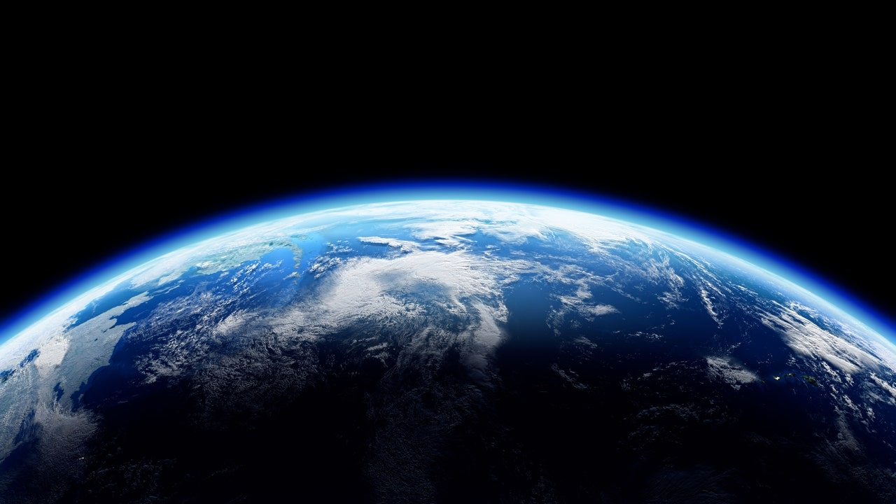
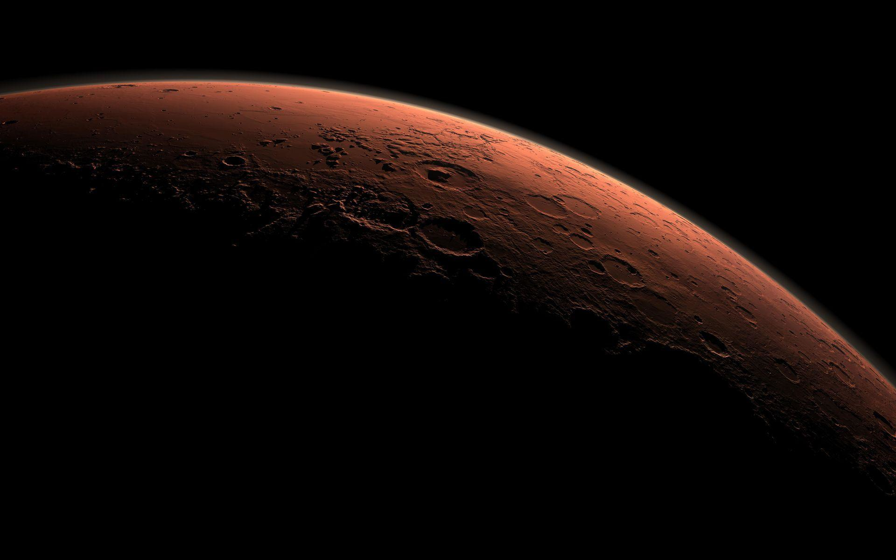

Our Solar System
Mercury

Mercury is the first planet from the Sun and the smallest in the
Solar System. It is a rocky planet with a trace atmosphere and a
surface gravity slightly higher than that of Mars. The surface
of Mercury is similar to Earth's Moon, being cratered, with an
expansive rupes system generated from thrust faults, and bright
ray systems, formed by ejecta. Its largest crater, Caloris
Planitia, has a diameter of 1,550 km (960 mi), which is about
one-third the diameter of the planet (4,880 km or 3,030 mi).
Being the most inferior orbiting planet, it always appears close
to the Sun in Earth's sky, either as a "morning star" or an
"evening star". It is the planet with the highest delta-v
required for travel from Earth, as well as to and from the other
planets in the Solar System.
Earth

Earth is the third planet from the Sun and the only astronomical
object known to harbor life. This is made possible by Earth
being an ocean world, the only one in the Solar System
sustaining liquid surface water. Almost all of Earth's water is
contained in its global ocean, covering 70.8% of Earth's crust.
The remaining 29.2% of Earth's crust is land, most of which is
located in the form of continental landmasses within Earth's
land hemisphere. Most of Earth's land is at least somewhat humid
and covered by vegetation, while large ice sheets at Earth's
polar deserts retain more water than Earth's groundwater, lakes,
rivers, and atmospheric water combined. Earth's crust consists
of slowly moving tectonic plates, which interact to produce
mountain ranges, volcanoes, and earthquakes. Earth has a liquid
outer core that generates a magnetosphere capable of deflecting
most of the destructive solar winds and cosmic radiation.
Mars

Mars is the fourth planet from the Sun. It is also known as the
"Red Planet", for its orange-red appearance. Mars is a
desert-like rocky planet with a tenuous atmosphere that is
primarily carbon dioxide (CO2). At the average surface level the
atmospheric pressure is a few thousandths of Earth's,
atmospheric temperature ranges from -153 to 20 °C (-243 to 68
°F), and cosmic radiation is high. Mars retains some water, in
the ground as well as thinly in the atmosphere, forming cirrus
clouds, fog, frost, larger polar regions of permafrost and ice
caps (with seasonal CO2 snow), but no bodies of liquid surface
water. Its surface gravity is roughly a third of Earth's or
double that of the Moon. Its diameter, 6,779 km (4,212 mi), is
about half the Earth's, or twice the Moon's, and its surface
area is the size of all the dry land of Earth.